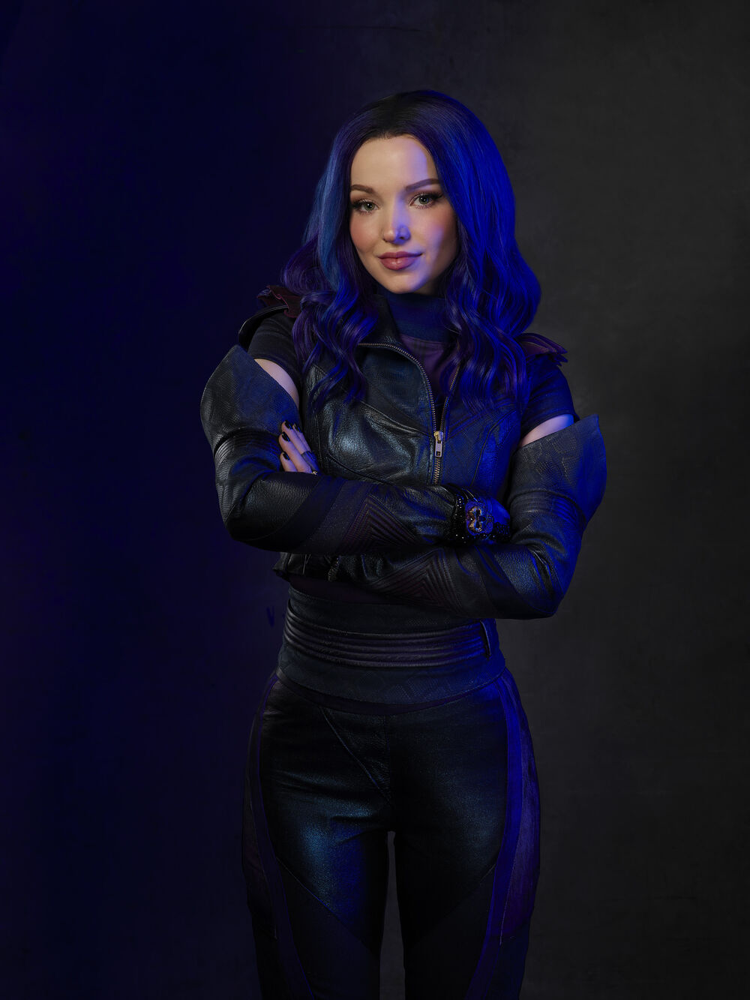
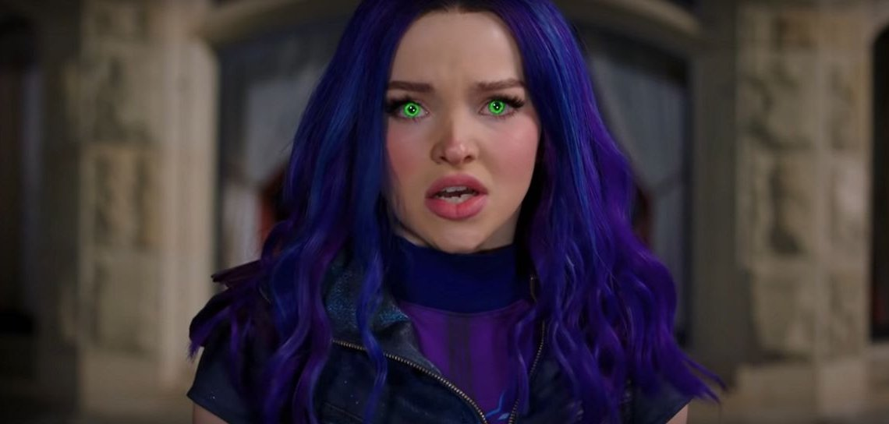
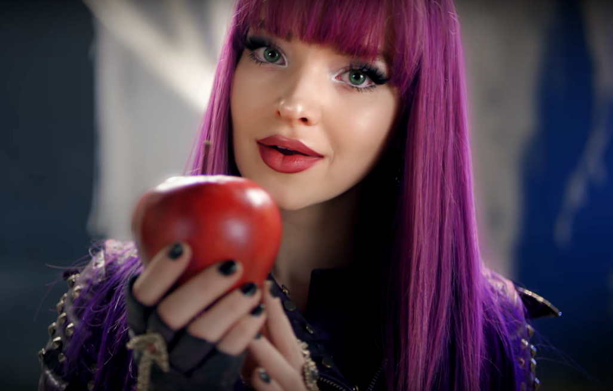
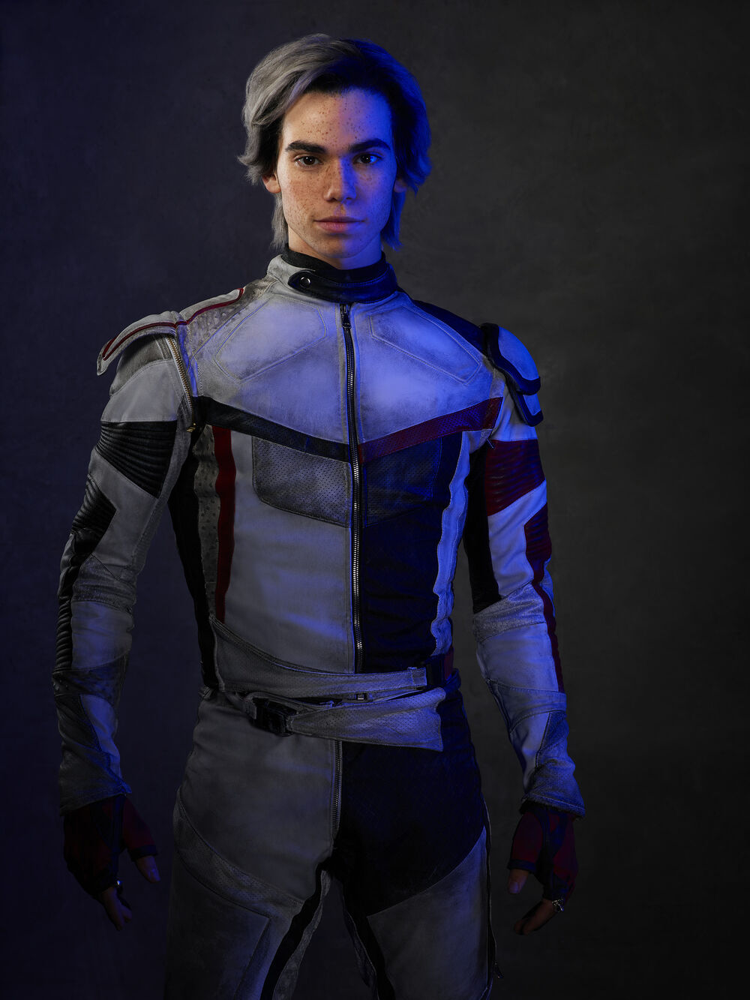
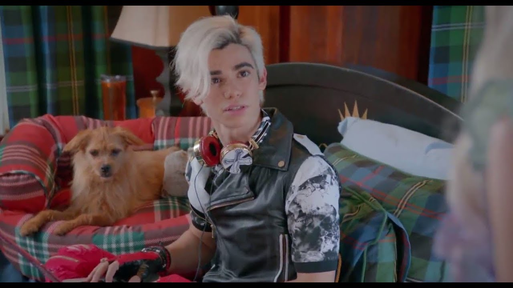
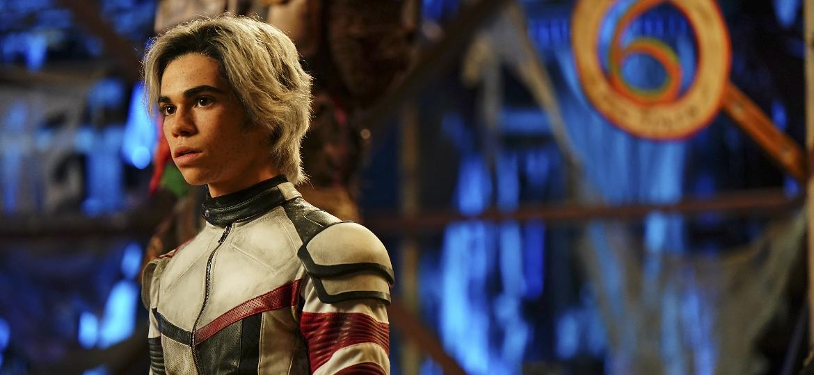

LINKS RELEVANTES
Chillin' Like a Villain(MELHOR CLIP)
One Kiss
(MELHOR MÚSICA)
Queen of Mean
(LYRICS)
Night Falls
(LYRICS)
Descendentes 3
(TRAILER)
WIKI
(CONTEÚDO MAIS DETALHADO)


CARLOS

Carlos Oscar De Vil (mais conhecido como Carlos) é um personagem principal em Descendentes, Descendentes 2 e Descendentes 3. Ele é o filho de Cruella De Vil, a principal antagonista da franquia "101 Dálmatas", e um dos filhos dos vilões que foram presos em uma ilha proibida com os outros vilões.LER MAIS
PRÓXIMA PÁGINA